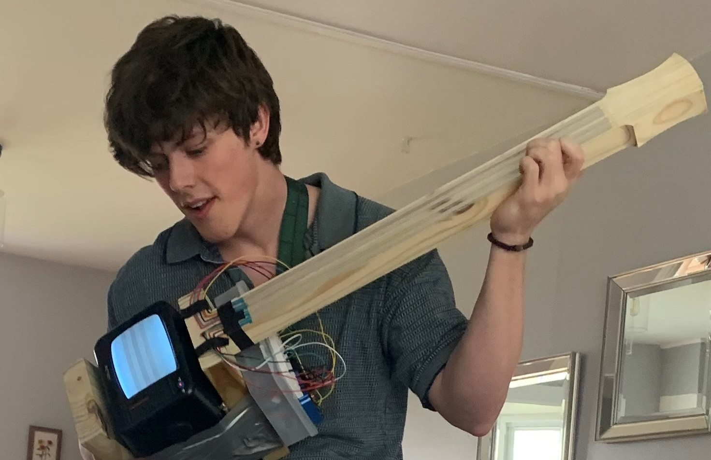

Hello there,
my name is Conor!
It's a pleasure
Research Interests:
Projects
Just like this website, I love diving into projects that push the limits of my programming abilities. I've brought my own game to life using Python and the Pygame library. For the tabletop and card games my friends and I enjoy, I've designed and 3D-printed a variety of custom accessories. I've also built and programmed my own FPV drone, and later repurposed some of its components to create a portable movie headset. Using Arduino, I developed a device capable of writing and encrypting RFID Type Two cards, and I even crafted my own desk-mounted robotic arm. These projects not only expand my skills but also fuel my passion for innovation.
Pictured above is one of my more recent personal projects that I am very fond of. I made an instrument out of an old CRT Television by utilizing the controlled oscillations of the electric field produced by the cathode ray tube. I used an arduino and soft potentiometers (positioned on the neck of the instrument) to modulate the frequency of the electric field in order to produce different notes. In order to produce an audible sound all you need to do is hold up an aux cord plugged into an amp near the screen of the television!
Senior Design Project: The FRED app
I worked on a team to produce an MVP of an app that would help manage the daily lives of people living with dementia. We also worked on allowing future versions of the app to connect caregiver and person afflicted with dementia to each other. The app was developed with flutter and includes a user account management system with Firebase, an friendly converstaional chatbot based in ChatGPT, a calendar and reminder feature, cognitively stimulating games, and voice controls.
Software and Programming Skills
Work History:
CURRENT - Research Assistant/Software Developer for Dr. Zhao - Knoxville, TN
Research in using technical solutions and AI to solve various problems with a large focus in improving dementia care. In this lab I have worked on a wide variety of projects such as developing social robotic systems, assistive web apps that use embeddings for custom AI features, and exploring the efficacy of generative AI to simulate patient data.
Link to a few recorded project demos here
Tutor - Knoxville, TN
Crafted several lesson plans in topics of calculus, programming in Python and MatLab, organic chemistry, and various other STEM subjects.
Research Assistant for Dr. Millet - Knoxville, TN
Bee conservation research. Through grant funding in the lab, I assisted in the creation of an educational bee exhibit at the Knoxville zoo. I also studied ideal hive structures for wild bees to assist stability of domestic bee hives.
Medical Assistant - Naknek, AK
In rural Alaska, Performed X-rays, Injections, Blood Draws, Patient Care, etc.
Research Assistant for Dr. Zhang - Birmingham, AL
Cardiovascual tissue engineering research. I assisted graduate students by performing Trichrome Staining on various tissues for analysis after myocardial infarction and treatment. I also made some samples of cardiac tissue patches and performed stress testing on aformentioned specimens. I would also count cells types under a microscope for graduate students as this was a very time consuming process.
Independent Tech Repair
Commissioned for Smart TVs, Apple Watches, and Personal Computers (Software and Hardware)
Server of The Heritage - Brentwood, TN
Waiting Experience, Delivery, Following COVID safety guidelines
☎ Contact information:
📧 browncon505@gmail.com📞 (615)-339-3024
📝 My Resume
🙋♂️ Linkedin Profile
📹 Project Demos